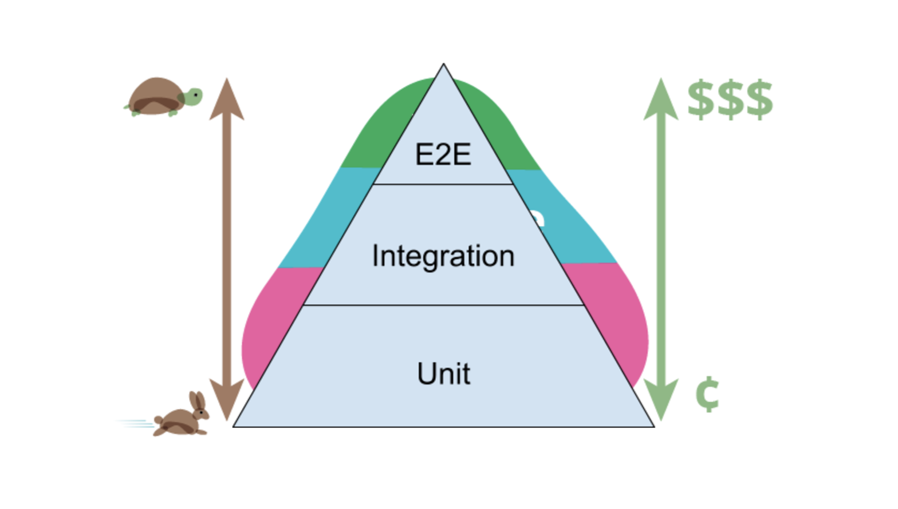

1 Pyramids of the World
1.0.1 Djoser - Stepped

1.0.2 Meidum - Collapsed
1.0.3 Bent Pyramid

1.0.4 Great Pyramid of Giza - Success
Most software today is very much like an Egyptian pyramid with millions of bricks piled on top of each other, with no structural integrity, but just done by brute force and thousands of slaves. – Alan Kay
2 The Testing Pyramid
2.0.1 Pyramid

2.0.2 Teardrop
2.0.3 Onion
2.0.4 Spinning Top
2.0.5 The challenge: make the pyramid triangular again
3 Process Wrangling
3.1 Camel Market
3.2 Ready to Ride

3.3 SqlServer for Linux
- ported in 2017
- adopted experimental Drawbridge project, effectively a small virtual Windows in a process
- very similar to Docker itself
- https://www.microsoft.com/en-us/research/project/drawbridge/
- SqlServer in many ways an OS to itself - bypasses OS memory and disk management
- so SqlServer inside Drawbridge inside Docker inside…
- proprietary, but free for non-production use
- Microsoft offers downloadable Docker image
4 Code
…